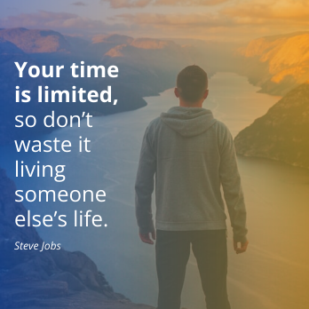

Fotografie
Při tvorbě designu velmi často používáme fotografie. Fotky pomáhají vyjadřovat emoce pomocí svých barev, kompozice a témata kterého se týkají. Dobrá fotka umí vyjádřit mír, zlost nebo třeba zábavu. Díky fotkám může náš design více viniknout, nebo je můžeme použít třeba jako nějaké pozadí.
Jak funguje fotoaparát
Pokud vlastníme fotoaparát a fotíme si vlastní fotky, tak je dobré vědět jak vůbec fotoaparát funguje. Díky tomu můžeme jeho vlastnosti využít k našemu prospěchu. Nebudu zde do detailu rozepisovat jak fotoaparát funguje, ale spíš tu jen popíšu, které vlastnosti fotoaparátu mají na co vliv. Nejsem na fotografování žádný odborník.
Fotoaparát funguje tak, že sbírá světlo do uzavřeného boxu a zachycený obrázek nahraje na médium, které je citlivé na světlo. Kolik světla do fotoaparátu pronikne kontroluje závěrka, která se otevírá nebo zavírá. Další funkce kamery nám třeba umožňují kontrolovat jak zaostřený je objekt, který fotíme, a tak dále.
Hlavním faktorem pro pořízení dobré fotografie je kontrolování kolik světla vstoupí do fotoaparátu. Světlo a fotografování patří k sobě, proto je světlo pro fotografování velmi důležité. Nasvícení objektu různými způsoby může dramaticky změnit, jak bude objekt vyfocen.
Expozice
Pro vytvoření fotografie je potřeba provést expozici, což je vystavení senzoru fotoaparátu světlu z fotografované scény. Expozice tedy určuje, kolik světla je senzorem fotoaparátu zachyceno a jak tmavá nebo světlá fotka bude. Expozice je určována rychlostí závěrky. Čím větší je rychlost závěrky, tím méně světla se do fotoaparátu dostane.
Clona
Clona určuje, kolik světla může projít přes čočku fotoaparátu. Čím více je clona otevřená, tím světlejší bude výsledná fotka. To jak moc je clona otevřená typicky určuje číslo F. Čím menší číslo F je, tím více je clona otevřená. Kromě světlosti fotky clona také určuje hloubku ostrosti. Můžeme tedy nastavit aby byl fotografovaný objekt ostrý, zatímco jeho pozadí ne. V následující ukázce byly obrázky editovány pro ukázku různé hloubky ostrosti, ale nebyly tak vyfoceny.
ISO
ISO nastavení určuje, jak moc je fotoaparát citlivý na světlo. Pomáhá ovládat expozici. Více citlivé ISO zachytí více světla a méně citlivé ISO zachytí méně světla. Větší ISO číslo ale také na fotku přidá více šumu.
Kompozice
Umístění předmětů na fotce může určit, jaké bude fotka v divákovi vyvolávat pocity. Znalost dobré kompozice nepomáhá jen ve fotografování, ale je také důležitou součástí grafického designu. Výběrem fotky, která má dobrou kompozici, můžeme k této fotce později lépe přidat ostatní grafické prvky.
Pokud fotíme jen jeden předmět, tak jej většinou můžeme umístit doprostřed naší fotky. Fotky tohoto typu se zaměřují jen na jednu věc, kterou si můžeme prohlédnout. Nic moc dalšího se na nich neděje. Zobrazují informaci jednoduše a rychle, protože na nich není nic dalšího k vidění. I když se může něco odehrávat v pozadí foceného objektu, divák se na to nesoustředí, protože fotka se zaměřuje na focený objekt.
Posouváním foceného objektu na fotce horizontálně nebo vertikálně můžeme změnit jeho vizuální váhu. Každý předmět na fotce (nebo i designu) má vizuální váhu, která se mění podle jeho pozice nebo výraznosti. Předmět na první fotce z následujících dvou fotek má vysokou vizuální váhu, zatímco předmět na druhé fotce má nízkou vizuální váhu.
Vizuální váha předmětu může být zvýšena jeho umístěním na fotce. Dobrou vizuální váhu focených objektů můžeme udržet, když fotografovanou scénu rozdělíme vertikálně a horizontálně na tři části. Říká se tomu 'rule of thirds'. Vytvoří se nám tím mřížka, do které můžeme rozdělit fotografované objekty a přidělit jim tak vizuální váhu.
Barvy fotek
Každá fotka obsahuje různou směs barev. Občas již ze začátku víme, které barvy budeme pro náš design používat, a výběr fotky je jednoduchý. Jindy můžeme třeba narazit na fotku, kterou jsme neplánovali použít.
Předtím než začneme vytvářet design bychom se měli alespoň zamyslet nad tím, jak chceme na diváka zapůsobit. Pokud děláme nějaký zabavný design, tak je dobré použít jasnější barvy. Pokud naopak děláme něco vážného, tak může být lepší zvolit spíš tmavší barvy. Při výběru fotky podle barev bychom měli dodržovat základní principy výběru barev. Pokud pro naši práci hledáme fotky na internetu, tak může být velká šance že již byly editovány aby měli dobrou harmonii barev.
Je dobré když se naše barvy, které používáme pro design, k obrázku hodí. Pokud použijeme odporující nebo náhodné barvy, tak se nám naše vybraná fotka nemusí k designu hodit. Neznamená to ale, že bychom měli pro design používat jen barvy, které se nachází na fotce se kterou pracujeme. Můžeme použít i jiné barvy, ale měli bychom se řídit harmonií barev. Například complementary barvy fungují s fotkou celkem dobře.
Při tvorbě designu bychom neměli zapomínat na kontrast mezi fotkou a ostatními prvky designu. Pokud na fotku přidáváme text, tak by měl jít snadno přečíst. V některých případech nám může například pomoct překrýt obrázek nebo jeho část průhlednou barvou nebo barevným gradientem.
Zdroje pro fotky
Díky tomu že máme fotoaparáty v mobilních telefonech, je dnes celkem jednoduché pořídit si vlastní fotografii. Pokud si ale vlastní fotky vytvářet nechceme, tak existuje spousta zdrojů na kterých je můžeme čerpat. Vždy je ale nutné dbát na to, abychom dodrželi licence fotek, které chceme použít. Ne každou fotku můžeme jen tak použít, u některých musíme například uvést autora. Zde jsem vypsal pár zdrojů, na kterých můžete fotky čerpat.
pokračovat na další část